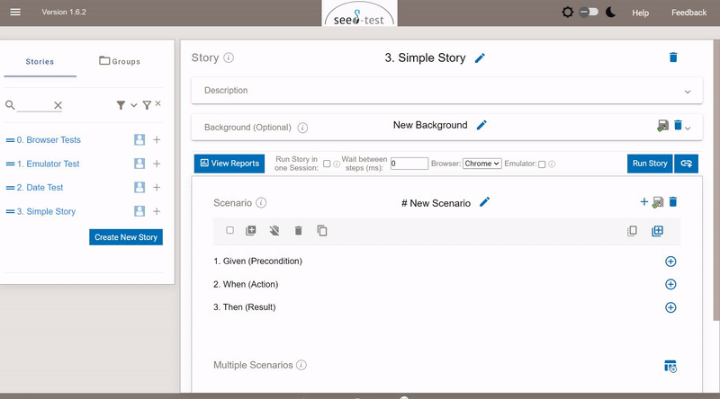

Created by Stellmacher-Bergmann, Anneke, last modified by Sorna, Daniel on Mär 21, 2024
Seed ist ein Testing-Tool in Form einer Web-Anwendung basierend auf Cucumber und Selenium. Mit Seed können End-to-End-, User Interface-, Akzeptanz-, Regressions- und Smoketests für Webanwendungen erstellt und automatisiert ausgeführt werden. Seed verfolgt einen No-Code Ansatz für die Testfallerstellung und –ausführung und basiert auf dem Ansatz Behaviour Driven Development.

Features:
Testfall-Ausführung- Ausführung von Scenarios
- Ausführung von Stories
- Parallele oder sequentielle Ausführung der Gruppen von Stories
| Testfall-Erstellung- Konfiguration von Background
- Konfiguration von Examples
- Hinzufügen von Test Steps
- Deaktivierung von Steps
- Dragging von Steps (Änderung der Steps-Anordnung)
- Erstellen/Hinzufügen von Blöcken
- Klonen von Szenarien
|
Testfall-Administrierung- Erstellen von Gruppe/Story/Szenario
- Umbenennen von Gruppe/Story/Szenario
- Suche nach Stories
| User-Management |
Zusammenarbeit- Teammitglieder ins Projekt einladen
- Zusammenarbeit (über Workgroups)
- Kommentieren von Testfällen
| Reporting- Einblenden von Test-Reports
- Speichern von Reports
- Herunterladen von Reports
- Drucken von Reports
- Speichern von Report History
- Teilen von Reports
|
{kind=link}
{kind=link}